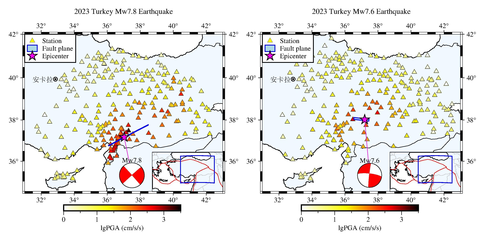
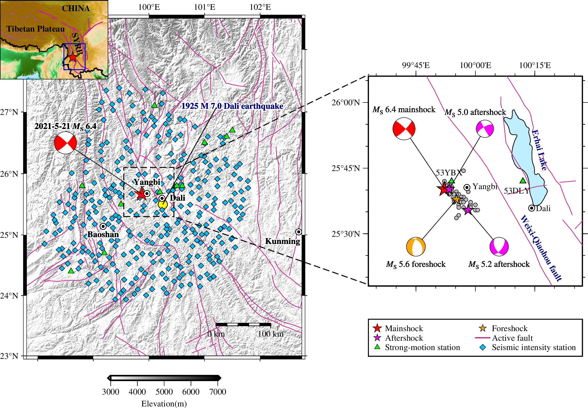

-

Characteristics and simulations of ground motions in Turkey Mw7.8 and Mw7.6 great earthquakes on 6 February 2023
地球物理学报 Chinese Journal of Geophysics , 67(8): 2990-3003
Hongwei Wang, Shengyin Qiang, Ruizhi Wen, Yefei Ren.
-
Investigating the Effects of Structural Parameters on Surface Seismic Aggravation in Two-dimensional Sedimentary Valleys
Soil Dynamics and Earthquake Engineering, Volume 171, August 2023, 107964
Shengyin Qiang, Hongwei Wang, Ruizhi Wen, Yefei Ren, Ying Zhou.
-

Characteristics of Strong Ground Motions from Four Ms ≥ 5.0 Earthquakes in the 2021 Yangbi, Southwest China, Seismic Sequence
Journal of Earthquake Engineering, Volume 27, 2023 - Issue 14, Pages 3957-3974
Shengyin Qiang, Hongwei Wang, Ruizhi Wen, Yefei Ren, Jianwen Cui.
-
Three-dimensional ground motion simulations by the stochastic finite-fault method for the Yangbi, Yunnan Ms6.4 earthquake on May 21, 2021
地球物理学报 Chinese Journal of Geophysics , 64(12): 4538-4547
Shengyin Qiang, Hongwei Wang, Ruizhi Wen, Chunguo Li, Yefei Ren.

 Soil Dynamics and Earthquake Engineering, Volume 171, August 2023, 107964Shengyin Qiang, Hongwei Wang, Ruizhi Wen, Yefei Ren, Ying Zhou.
Soil Dynamics and Earthquake Engineering, Volume 171, August 2023, 107964Shengyin Qiang, Hongwei Wang, Ruizhi Wen, Yefei Ren, Ying Zhou. 地球物理学报 Chinese Journal of Geophysics , 64(12): 4538-4547Shengyin Qiang, Hongwei Wang, Ruizhi Wen, Chunguo Li, Yefei Ren.
地球物理学报 Chinese Journal of Geophysics , 64(12): 4538-4547Shengyin Qiang, Hongwei Wang, Ruizhi Wen, Chunguo Li, Yefei Ren.